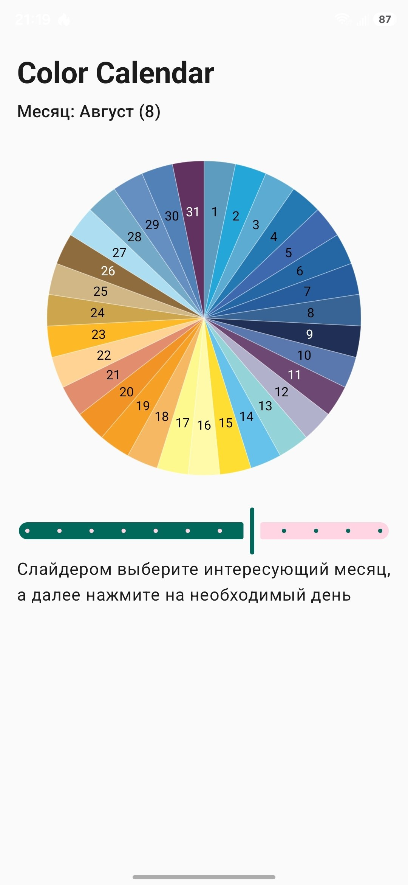
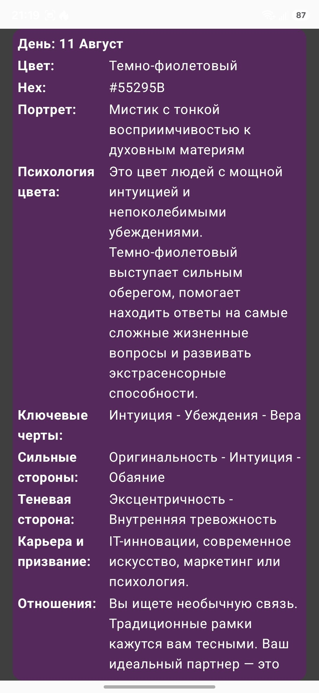

ColorInsomnia

Подбор материалов для рукоделия. Расчёт цветовых гармоний и поиск цвета с камеры.
Подбор материалов для рукоделия. Расчёт цветовых гармоний и поиск цвета с камеры.
ColorInsomnia — инструмент цвета для дизайнеров и мастеров рукоделия: рассчитывает гармоничные сочетания, распознаёт цвет с камеры, находит названия оттенков и подбирает бренды и идентификаторы материалов для закупки.
Приложение подходит для дизайнеров украшений, fashion‑индустрии и всех, кто интересуется психологией и эстетикой света и цвета. Интерфейс интуитивен и не требует сложных настроек.
«Privacy Policy»Приложение можно установить напрямую или через RuStore.

Скачать и установить ColorInsomnia с RuStore
Также приложение можно установить напрямую, без использования RuStore.
Download APK (ColorInsomnia v20.0)
Перед установкой рекомендуется сверить SHA‑256‑хэш:


Главный экран обеспечивает навигацию по ключевым функциям приложения.
В правом верхнем углу расположен переход в настройки приложения.
В центральной части для вдохновения ежедневно отображается «картинка дня» и подобранная по её цветовой гамме палитра из пяти цветов. При нажатии на картинку дня открывается экран материалов, подобранных к цветам этой палитры.
Восемь иконок внизу обеспечивают переход на экраны для:

На этом экране можно включить или отключить подсказки, настроить тему приложения, очистить кэш, отправить вопрос или отзыв разработчикам, а также посмотреть версию приложения.

Раздел позволяет подобрать к целевому цвету гармоничное сочетание. Для точности ввода цвета можно использовать HEX‑значение в правом верхнем углу цветового круга.
После подбора сочетания выбранные цвета можно добавить в палитру или перейти к разделу материалов, чтобы просмотреть доступные варианты по заданным цветам.

Функция позволяет уменьшать количество цветов на изображении и сохранять результат либо в виде обновлённого изображения, либо в виде схемы с указанием расположения цветов и списка подобранных к ним материалов.

В этом разделе можно хранить списки избранных материалов и быстро к ним возвращаться.

В этом разделе представлены очерки, статьи и новости о цвете и его восприятии.


Раздел позволяет оценивать цвет в режиме реального времени и перейти к гармоничным сочетаниям или материалам по выбранному цвету.
Для удобства можно заморозить изображение и нажатием пальца выбрать нужную область. Также поддерживаются картинки, сохранённые на устройстве.


В этом разделе можно хранить до 10 палитр, сохранённых из раздела «Гармонии» или сгенерированных случайным образом.
Палитру можно «примерить» к плетёному элементу или комплекту одежды, чтобы оценить её визуальное восприятие.


Раздел позволяет открыть изображение, сохранённое на устройстве, и проанализировать цвета со всего изображения или с выбранного фрагмента.


В этом разделе можно, зная идентификатор цвета, найти нужный материал и подобрать гармоничные цвета или аналогичные материалы.


В этом разделе для вдохновения размещен японский календарь, в котором каждый день в году связан с определенным цветом.
Дата вступления в силу: 20 сентября 2026 г.
Effective date: September 20, 2026
Эта Политика конфиденциальности («Политика») объясняет, как ColorInsomnia («мы», «нам» или «наш») собирает, использует, хранит и защищает вашу информацию, когда вы используете Android‑приложение ColorInsomnia («Приложение»). Приложение помогает подбирать цвета и сочетать материалы на основе этих цветов для творческих проектов.
Используя Приложение, вы соглашаетесь с практиками обработки данных, описанными в этой Политике. Если вы не согласны, пожалуйста, не используйте Приложение.
Когда вы используете Приложение, определённая техническая информация может собираться автоматически:
Мы используем Firebase (включая Firebase Crashlytics и связанные сервисы), чтобы собирать логи и диагностические данные для обнаружения, анализа и исправления ошибок и повышения стабильности.
Следующие виды данных хранятся только локально на вашем устройстве и не загружаются на наши серверы в рамках обычной работы Приложения:
Эти локальные данные остаются на вашем устройстве, если вы явно не решите экспортировать или поделиться ими с помощью системных функций (например, отправить изображение через другое приложение).
Мы используем собранную информацию для следующих целей:
Приложение использует сервисы Firebase (такие как Firebase Crashlytics и Firebase Analytics, если они включены) для сбора диагностических данных и данных об использовании. Эти сервисы помогают нам понимать ошибки, сбои и общие паттерны использования в агрегированном виде.
Firebase предоставляется компанией Google LLC. Практики обработки данных Firebase регулируются условиями и политикой конфиденциальности Google, доступными по адресу: https://policies.google.com/privacy .
Мы не продаём ваши персональные данные. Мы можем передавать данные поставщикам услуг (таким как Firebase/Google) строго для целей, описанных в этой Политике, и в рамках договорных обязательств по защите вашей информации.
В зависимости от вашей юрисдикции у вас могут быть определённые права в отношении ваших персональных данных, такие как:
Вы также можете управлять некоторыми аспектами сбора данных через настройки вашего устройства (например, сбросить advertising ID или ограничить персонализацию рекламы). Чтобы воспользоваться своими правами или задать вопросы, пожалуйста, свяжитесь с нами, используя контакты в разделе «Свяжитесь с нами».
Приложение не предназначено для детей младше 13 лет. Мы сознательно не собираем персональные данные от детей младше 13 лет. Если нам станет известно, что мы собрали персональные данные от ребёнка младше 13 лет, мы примем меры для как можно более быстрого удаления таких данных.
Мы можем время от времени обновлять эту Политику конфиденциальности, чтобы отразить изменения в Приложении, наших практиках или применимых законах. Обновлённая Политика будет опубликована в Приложении и/или на странице Приложения в Google Play с новой «Датой вступления в силу» вверху.
Ваше продолжение использования Приложения после внесения изменений означает, что вы принимаете обновлённую Политику. Если вы не согласны с изменениями, пожалуйста, прекратите использование Приложения.
Если у вас есть вопросы, замечания или запросы, касающиеся этой Политики конфиденциальности или наших практик обработки данных, пожалуйста, свяжитесь с нами:
Эта Политика составлена с учётом общих принципов защиты данных, включая принципы, закреплённые в таких нормативных актах, как GDPR (для пользователей из ЕЭЗ), и аналогичных законах в других юрисдикциях. Там, где применяются обязательные местные законы, они имеют приоритет над этой Политикой в необходимой степени.
This Privacy Policy (“Policy”) explains how ColorInsomnia (“we”, “us”, or “our”) collects, uses, stores, and protects your information when you use the ColorInsomnia Android application (the “App”). The App helps you select colors and match materials based on those colors for creative projects.
By using the App, you agree to the data practices described in this Policy. If you do not agree, please do not use the App.
When you use the App, certain technical information may be collected automatically:
We use Firebase (including Firebase Crashlytics and related services) to collect logs and diagnostic data to detect, analyze, and fix errors and improve stability.
The following types of data are stored only locally on your device and are not uploaded to our servers as part of normal App operation:
This local data remains on your device unless you explicitly choose to export or share it using system features (for example, sharing an image via another app).
We use the collected information for the following purposes:
The App uses Firebase services (such as Firebase Crashlytics and Firebase Analytics, if enabled) to collect diagnostic and usage data. These services help us understand errors, crashes, and general usage patterns in aggregate.
Firebase is provided by Google LLC. Firebase’s data practices are governed by Google’s terms and privacy policy, available at: https://policies.google.com/privacy .
We do not sell your personal data. We may share data with service providers (such as Firebase/Google) strictly for the purposes described in this Policy and under contractual obligations to protect your information.
Depending on your jurisdiction, you may have certain rights regarding your personal data, such as:
You can also manage some data collection through your device settings (for example, resetting your advertising ID or limiting ad personalization). To exercise your rights or ask questions, please contact us using the details in the “Contact Us” section.
The App is not intended for children under 13 years of age. We do not knowingly collect personal data from children under 13. If we become aware that we have collected personal data from a child under 13, we will take steps to delete such data as soon as possible.
We may update this Privacy Policy from time to time to reflect changes in the App, our practices, or applicable laws. The updated Policy will be published within the App and/or on the App’s Google Play listing, with a new “Effective date” at the top.
Your continued use of the App after changes are made means that you accept the updated Policy. If you do not agree with the changes, please stop using the App.
If you have any questions, concerns, or requests regarding this Privacy Policy or our data practices, please contact us at:
This Policy is designed to align with general data protection principles, including those found in regulations such as the GDPR (for users in the EEA) and similar laws in other jurisdictions. Where mandatory local laws apply, they will take precedence over this Policy to the extent required.